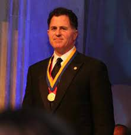
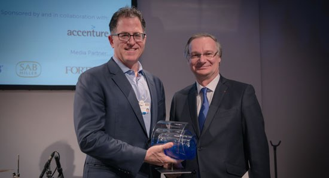

At the age of 19, Michael Dell had already begun to make his mark on the world of technology. In 1984, he single-handedly built and sold computers from his dorm room, launching the company that would eventually become Dell Technologies.
In 1983, Michael Dell founded a computer company called PC's Unlimited. After 20 years of success, the company changed its name to Dell Inc in 2003. Dell Inc has since become one of the world's leading computer technology companies, providing innovative products and services to customers around the globe
In 1992, Dell made history by becoming the first company to be led by a CEO under the age of 30 to make it onto the Fortune 500 list. Michael Dell, the founder and CEO of Dell, was only 27 years old when his company made the list, making him the youngest CEO to ever lead a Fortune 500 company.
 on the left is a photo of when Michael Dell won the 2013 Franklin Institute's Bower Award for Business Leadership.
on the right is a photo of when Micheal Dell won the 2015 Circular Economy Awards, Davos Switzerland.